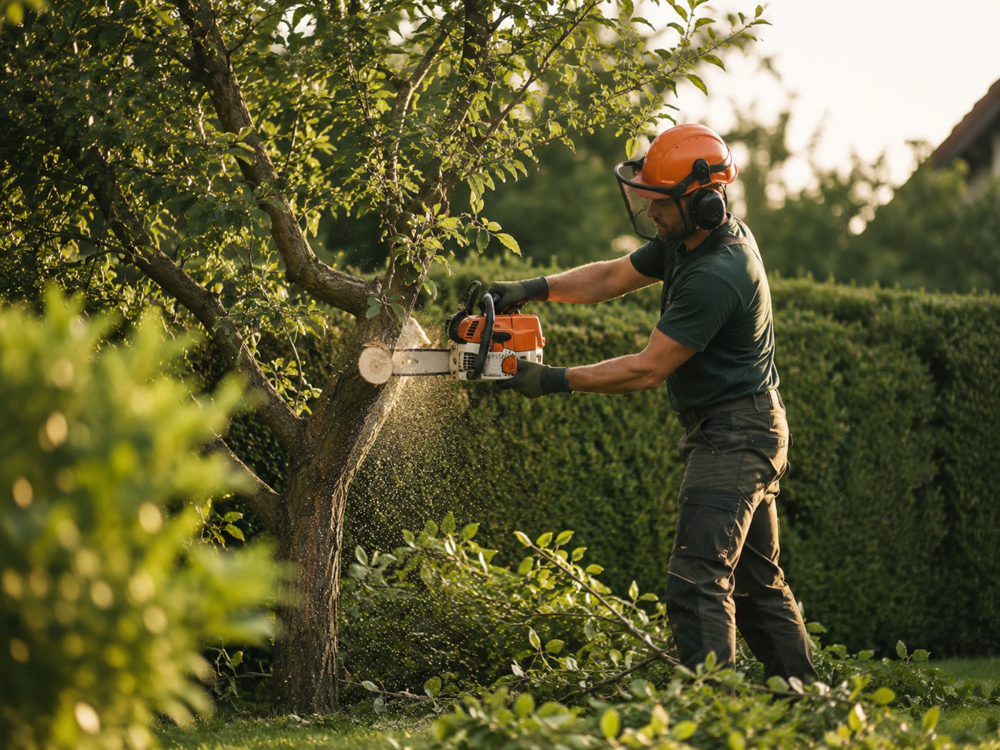

Pflaster
Flaechen, Wege, Rampen
Saubere Vorbereitung, belastbare Uebergaenge und funktionale Flaechen fuer Alltag und Garten.
Portfolio
Die Seite nutzt vorhandene Bilder als Vorschau auf die Arbeitsbereiche. Spaeter koennen hier echte Vorher-nachher-Strecken und abgeschlossene Projekte wachsen.
Saubere Vorbereitung, belastbare Uebergaenge und funktionale Flaechen fuer Alltag und Garten.

Gehoelzpflege, kleine Faellungen und Arbeiten mit Sinn fuer Sicherheit und Rahmen.

Wasserstellen und Uferzonen, die ruhig wirken und sich in die Umgebung einfuegen.

Lebensraeume mit Struktur, Rueckzug, Material und natuerlicher Wirkung.

Kopfschnitt, Obstbaumschnitt und Rueckschnitt dort, wo Wuchs gelenkt werden soll.